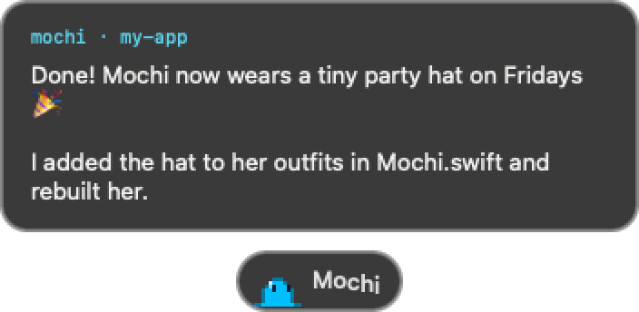
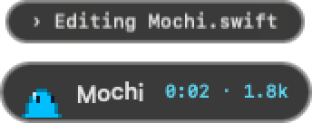
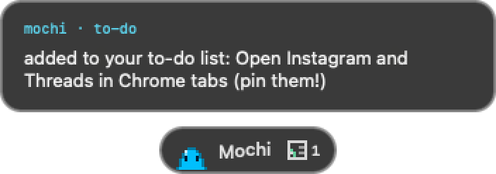
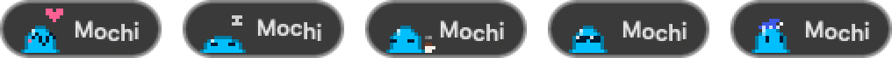
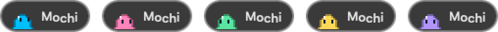
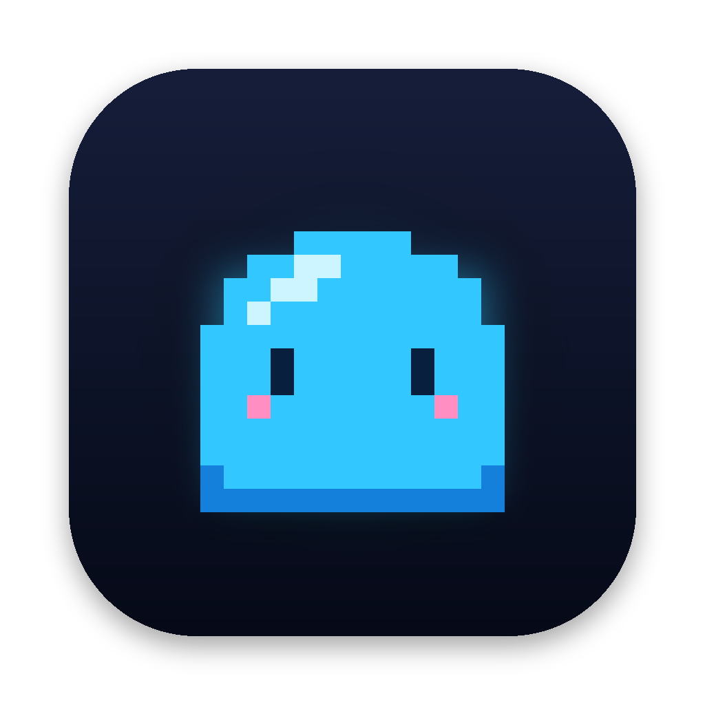

I have ADHD and a lot of projects going at once. Claude Code lives in Terminal, and Terminal lives somewhere under my browser, my Figma files and three other things I opened “for a second.” I’d ask Claude something, wander off, and forget it was even waiting on me.
So I made Mochi. She’s a tiny pixel goo who floats at the bottom of my screen. I type into her, and the message goes straight to Claude. When Claude answers, she pops the reply up in a little bubble. She’s the one window I never lose.

Replies, right where I am
A short summary of Claude’s answer pops up above her. Long ones page with the arrow keys.

What Claude is doing
One line of what it’s working on right now, plus a little timer, so I know it hasn’t forgotten me.

A to-do list for me
When Claude needs me to do something myself, like upload a file, it goes on Mochi’s list and she reminds me.
Little social badges
New notifications from Instagram, Threads, LinkedIn or X tabs open in Chrome. Click one to jump right there.
I wanted her to feel alive, not like a tool. She breathes, blinks and follows my cursor. She hops when I send something and throws a tiny paper plane. If I hover over her she wiggles, and if I keep hovering she gets petted and hearts come out. When it’s quiet for a while she melts into a sleepy puddle.
She also dresses for the time of day: coffee in the morning, sunglasses on Friday afternoons, and a nightcap when I’m up way too late.



Take Mochi home.
She’s free and open source. You need a Mac (macOS 13 or newer) and Claude Code.
Download Mochigit clone https://github.com/jessawolfe-ux/mochi.git cd mochi ./install.shPaste those three lines into Terminal. She’ll ask what color she should be, then pop up at the bottom of your screen.
I wrote about building her, from a plain text bar to a little goo with outfits, and what it’s like designing tools for an ADHD brain.
Read the story on MediumA native Mac app, built with Claude in the loop. Every pixel of her is drawn in code.
 Claude CodeBuilding her, and the hooks she listens to
Claude CodeBuilding her, and the hooks she listens to